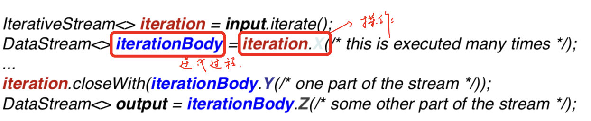
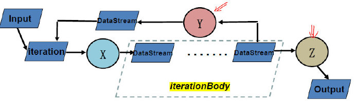
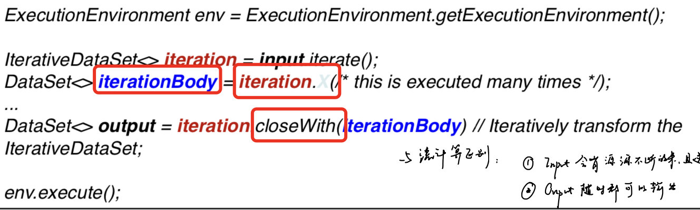
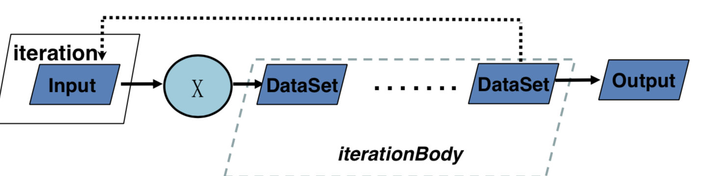
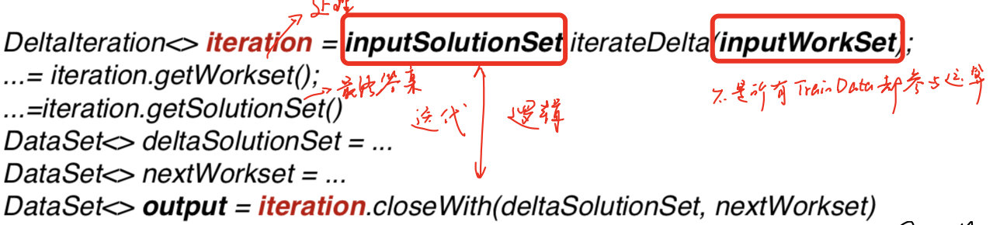
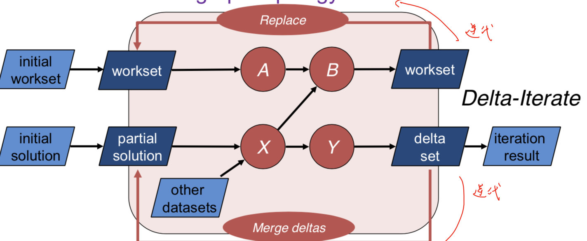

在Flink中，有三种迭代类型，一种对应DataStream，两种对应DataSet
DataStream Iteration


这里的iterationBody接收X的输入，并根据最后的closeWith完成一次迭代，另外的数据操作Z退出迭代。
由于DataStream有可能永远不停止，因此不能设置最大的迭代次数，必须显式的指定哪些流需要迭代，哪些流需要输出。
这时候，一般使用split transformation 或者 filter来实现。
下面定义了一个0-1000的字符流，每次迭代都减1，每个数直到小于等于1时输出（退出循环）：
DataStream<Long> someIntegers = env.generateSequence(0, 1000);
IterativeStream<Long> iteration = someIntegers.iterate();
DataStream<Long> minusOne = iteration.map(new MapFunction<Long, Long>() {
@Override
public Long map(Long value) throws Exception {
return value - 1 ;
}
});
DataStream<Long> stillGreaterThanZero = minusOne.filter(new FilterFunction<Long>() {
@Override
public boolean filter(Long value) throws Exception {
return (value > 0);
}
});
iteration.closeWith(stillGreaterThanZero);
DataStream<Long> lessThanZero = minusOne.filter(new FilterFunction<Long>() {
@Override
public boolean filter(Long value) throws Exception {
return (value <= 0);
}
});
对于迭代体iteration，每次执行map操作生成minusOne，然后将stillGreaterThanZero返回给iteration，同时将lessThanZero输出。
DataSet Bulk Iteration


可以发现与DataStream类似，但必须要迭代结束才能有输出。
同时，除了设置最大迭代次数，在closeWith中还可以添加第二个DataSet，当其为空时，则退出循环。
与流计算的区别：
- Input会有源源不断的来，且迭代过程中会有数据进入
- Output随时都可以输出
DataSet Delta Iteration
由于在图计算中有很多算法在每次迭代中，不是所有TrainData都参与运算，所以定义Delta算子。
workset是每次迭代都需要进行更新的，而solution set不一定更新。


可以通过iteration.getWorkset/getSolutionSet得到对应的DataSet，同时分别进行计算，当nextWorkset为空时，退出循环。
在迭代过程中，WorkSet是直接替代，而deltaSet是merge。